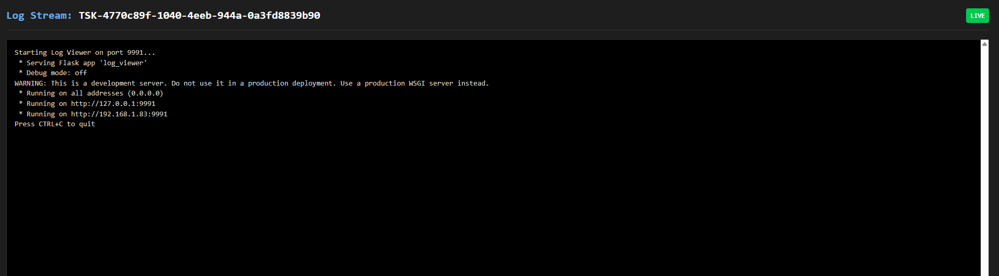

Titan Orchestrator
A self-hosted distributed runtime for DAGs, services, and agentic workflows — shipped as a single zero-dependency JAR. Define jobs in YAML or Python, and Titan handles capability routing and dependency execution across your cluster — from a nightly ETL pipeline to a multi-agent LLM workflow.
Ready to dive in?
Skip the reading and jump straight into the code. Follow our 5-Minute Quickstart to run your first distributed task, or view the Python SDK Reference.

Live Pipeline Visibility — DAG Pipelines View
Every pipeline submitted to the cluster — via CLI, SDK, YAML, or the visual Constructor — is automatically rendered as a live dependency graph with real-time execution status per node.

Architecture Overview
Titan consists of three components:
- Control Plane (Master) — DAG scheduling, dependency resolution, and capability routing
- Workers — Capability-tagged execution nodes that self-register on startup
- TitanStore (Optional) — Embedded AOF-backed persistence for crash recovery and shared agent state. No external database required.
Titan is fully functional without TitanStore — core execution and routing work without it, but you lose state recovery and SDK-driven KV operations.
Wondering how Titan compares to Airflow, Dagster, Ray, or Temporal?
See the full breakdown — honest scoring, capability tiers, and a "when NOT to use Titan" section.
The Capability Spectrum
Titan is designed to grow with your system's complexity:
-
Level 1: Distributed Cron (The "Scheduler") Execute Python scripts on remote machines in sequence or in parallel. Use the CLI or SDK to dispatch batch jobs, ETL pipelines, or any script-based workload across the cluster.
-
Level 2: Service Orchestrator (The "Platform") Deploy long-running API servers and keep them alive, restarting them automatically on crash. Port management is handled by Titan.
Levels 1 + 2 work together
A common pattern: deploy an LLM inference server or a data API as a permanent service (Level 2), then run batch scripts as jobs (Level 1) that call that service. Both run inside the same Titan cluster — the service stays alive while jobs come and go around it.
-
Level 3: Agentic Execution Runtime (The "Autonomous Mode") Programmatically construct execution graphs at runtime where software agents spawn downstream compute tasks conditionally based on LLM decisions or system states.
All three levels work together
Level 3 doesn't replace the others — it orchestrates them. An agent can keep an LLM inference server running as a permanent service (Level 2), dispatch batch analysis jobs that call it (Level 1), and dynamically spawn further tasks based on what those jobs return — all within a single cluster. Titan manages the services, the jobs, and the agent's execution graph in one runtime.
Built-In Dashboard
Titan includes a lightweight Python Flask dashboard to visualize cluster health, monitor worker load, and stream stdout/stderr from distributed jobs in real-time.
The dashboard ships with three views:
- DAG Visualizer — live graph of any running or completed pipeline with real-time status, logs, HITL approval, and workspace file downloads
- DAG Constructor — browser-based drag-and-drop builder for designing and deploying pipelines without writing code
- Agent Runs — groups multi-stage agent invocations into a single timeline row so you can track a full agent loop at a glance instead of hunting through individual DAG entries
For the dashboard you will need Flask as external dependency (The core engine has zero dependencies, this is an extension)
DAG Visualizer
Every pipeline appears here as a live dependency graph — regardless of how it was submitted (CLI, SDK, YAML, or Constructor). Node colors update in real-time as jobs move through PENDING → RUNNING → COMPLETED / FAILED.
For agentic workflows, the graph grows as the agent submits new work. Use the Agent Runs view for the high-level timeline across all stages — then click into any stage to drill down into its node graph and live logs here.
Visual DAG Constructor
Build and deploy pipelines without writing any code. Drag nodes onto the canvas, draw edges to define dependencies, configure each job's script, requirements, and priority — then hit Deploy to submit directly to the cluster.
The Constructor also auto-generates the equivalent Python SDK and YAML definitions, which you can copy for reuse in automated pipelines.
Prerequisite
The Deploy button submits jobs by reading script files from the Master's perm_files directory. Ensure the script files you reference in the Constructor have been created and staged to perm_files before deploying.

Live Log streaming
Monitor remote worker execution directly from the control plane UI in real-time.

Demo in Action:
1. Control Plane: Dynamic DAG Execution
Watch Titan resolve dependencies and execute a multi-stage workflow where the path is decided at runtime.
2. Reactive Worker Scaling
Watch the cluster detect load, spawn an additional Worker process on the same host, and distribute tasks across it.
🎬 View More Scenarios (GPU Routing, Fanout, Full Scale Cycle)
GPU Affinity Routing Parallel Execution (Fanout) Full Load Cycle (Scale Up & Descale)
Examples
The titan_test_suite/ directory has ready-to-run examples for every capability tier:
| Example | What it shows |
|---|---|
| Build Your First Agent (10 min) | Writer → Critic loop — simplest agentic pattern in ~60 lines |
| Human-in-the-Loop Pipeline | ML pipeline that pauses for human Approve/Reject before training |
| Multi-Agent Research Pipeline | Parallel agents + HITL gate + synthesis fan-in |
| Static YAML Pipelines | Diamond patterns, GPU routing, parallel fan-out |
Deployment
Titan runs locally out of the box. When you're ready to move to the cloud:
| Setup | When to use |
|---|---|
| Multi-VM Cloud Setup | Permanent cluster on GCP / AWS / Azure — Master on a VM, workers on VMs |
| Remote GPU Worker via SSH Tunnel | Keep your local machine as the Master, tunnel a remote GPU (RunPod, cloud VM) as a worker — no open ports needed |
API & Reference
- Python SDK Reference —
TitanClient,TitanJob, TitanStore, artifacts, and agent patterns - CLI Commands — Spin up Master, boot Workers, submit jobs from the terminal
- Java Core Engine — Internal class docs (
Scheduler,RpcWorkerServer, etc.)
Roadmap to v2.0
- Visual DAG Constructor: Browser-based drag-and-drop DAG editor with YAML/SDK code generation and one-click deploy.
- Distributed Consensus: Implement Raft or Paxos for Leader Election to remove the Master node as a Single Point of Failure (SPOF).
- Security & Auth: Implement mTLS (Mutual TLS) for encrypted, authenticated cluster communication.
- Containerized Execution: Add support for Docker execution drivers to provide true filesystem isolation (currently utilizing Process-Level isolation).
- Cluster Autoscaler Webhooks: Allow Titan to trigger external APIs (e.g., Azure VM Scale Sets, AWS EC2) to provision bare-metal compute automatically when queues saturate.
- Human-in-the-Loop (HITL): Pause DAG execution and wait for human Approve/Reject via the Dashboard. Supports per-gate timeouts and automatic gate injection via the SDK. See HITL Pipelines.
Project Status & Contributing
Titan is a custom-built, experimental runtime engineered from first principles by a single developer. While it successfully handles complex distributed execution loops and agentic workflows, it is currently in v1.0 Research Status.
Because distributed systems are inherently complex, you may encounter edge cases or network timeouts in non-standard environments. If you find a bug, break the orchestrator, or want to help harden the core engine, contributions are highly encouraged!
🐛 Report an Issue 🤝 How to Contribute
🚀 Quickstart: Run your first distributed task in 5 minutes 🧠 Read the Architecture Deep Dive